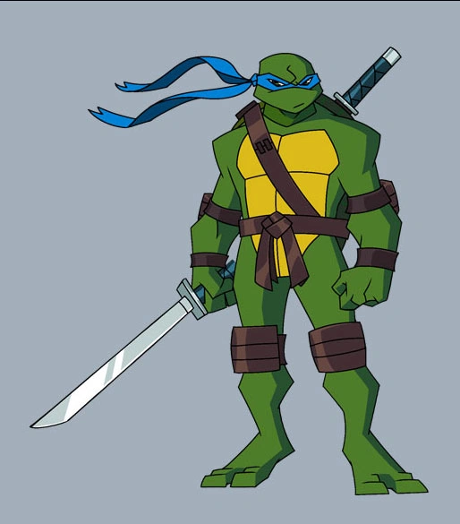

Leonardo
Leonardo, commonly nicknamed Leo, is a superhero appearing in Teenage Mutant Ninja Turtles comics and related media, and created by American comic book artists Kevin Eastman and Peter Laird. He is one of the four central characters of the franchise, along with his brothers, Raphael, Donatello, and Michelangelo. The leader of the Turtles, Leonardo aspires to be a brave, decisive, perfect hero. Unfortunately, he's an inexperienced teen (for the moment at least) with three smart-aleck brothers. It's the gap between his aspiration and current situation that is the greatest source of frustration in Leo's life. He's the most driven of the four Turtles, training and studying relentlessly. He tends to be hard on himself, but his diligence does not go unnoticed; he is the favored student of Splinter, whose approval he very much craves.
History
Leonardo and his brothers were once ordinary turtles: when they were infants, they were adopted from a pet store by Hamato Yoshi. When their soon to be father walked passed a strange man, a Kraangdroid, he felt something odd about him and followed. Unfortunately, Yoshi gave away his position when he accidentally stepped on a brown rat's tail. The Kraang found him and attempted to kill him, but Yoshi fought back hard. In the end, the Kraang dropped the canister of Mutagen they were holding, causing the turtles and Yoshi to mutate. Yoshi, having to have stepped on that rat, thus mutated into a humanoid brown rat by the name of "Splinter", while Leo and his brothers, after coming in contact with Splinter when he was human, mutated into humanoid turtles. Splinter knew they would never be accepted in their urban society, so he took them to the sewers, made a home down there, and made the four turtles his children. Knowing the world would be dangerous and there would be a time where they want to explore the outside world, Splinter trained the boys in the art of Ninjitsu. Leo and his brothers were named after great Renaissance artists from a book Splinter fished out of the storm drain.